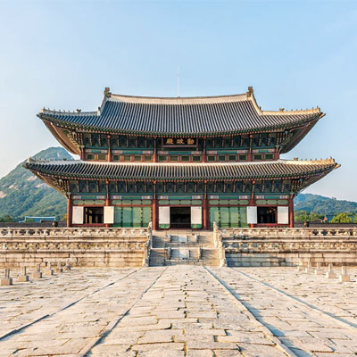
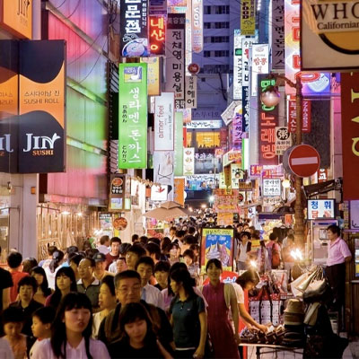
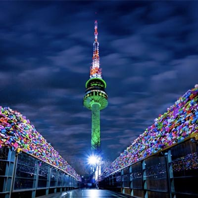
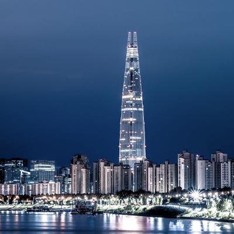
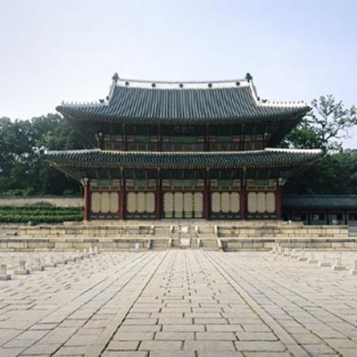
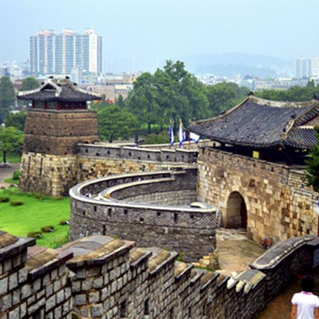

los favoritos de los turistas:

Palacio Gyeongbokung
El Complejo del Palacio de Seúl es un museo al aire libre. Construido en el siglo XIV para la familia real gobernante de la dinastía Joseon. Guarda muchas exhibiciones valiosas, incluidas las de la lista de tesoros nacionales.

Puente Banpodaegyo
El puente fuente más largo del mundo, ubicado sobre el río Hangang. Las fuentes están dispuestas a lo largo de sus bordes, formando arcos de agua entre el edificio y el río. El espectáculo es espectacular tanto de día como de noche.

Myeongdong
Calle comercial central de la capital de Corea del Sur. Grandes tiendas y boutiques de famosas marcas internacionales se encuentran a lo largo de toda su extensión.
El mejor lugar para comprar.

Torre N de Seúl
Ubicado en el monte Namsam, en el centro de Seúl. El edificio más alto de la ciudad. El símbolo de la Seúl moderna y su hito número uno. Es un complejo de entretenimiento con varias plataformas de observación, restaurantes, tiendas de souvenirs y un observatorio.

Lotte World Tower
Es el el rascacielos más alto de Seúl y de Corea del Sur, y se encuentra en el sexto puesto entre los rascacielos más altos del mundo. Además, alberga la 2ª plataforma de observación más alta del mundo en su planta 123, a 512,3 metros.

Palacio Changdrokgung
Uno de los cinco grandes palacios de Seúl, declarado Patrimonio de la Humanidad por la UNESCO. Durante cuatro siglos, el palacio fue la sede de la familia real. Es un maravilloso complejo arquitectónico y de parques.

Fortaleza Hwasong
El imponente edificio en la cima de una colina es un ejemplo único de arquitectura defensiva. La fortaleza fue construida a finales del siglo XVIII, fue destruida y restaurada. Es un complejo de torres, puertas y murallas extendidas (su longitud total es de 6 km).

Palacio Deoksungun
Uno de los complejos palaciegos de Seúl. En un momento fue la residencia oficial de la dinastía gobernante. El palacio y otros edificios de Deoksugun están rodeados por un hermoso jardín. En el interior hay dos grandes museos: el Imperial y el de Artes.

Museo Nacional
La vasta colección combina arte, historia y arqueología, presentada para mostrar la historia de la cultura coreana y contar la historia del pueblo coreano.

Hybe Insight Museum
Un museo en honor a la música, los artistas y los fans del K-pop. Siguiendo la misión “Creemos en la música”, alberga exposiciones, espacios y contenido interactivo, cuyo objetivo es brindar experiencias únicas al espectador.

Río Cheonggyecheon
Construido sin apenas ángulos rectos y recubierto con una piel de aluminio que cambia de color con la luz, es una de esas obras de arquitectura de vanguardia que reflejan la ambición de una megalópolis en plena transformación.

Observatorio Cheomseongdae
Uno de los tesoros nacionales del país. Es el edificio científico más antiguo del mundo. Construido en el siglo VII para observar las estrellas. La altura de la torre de piedra es de poco menos de 10 metros. Ubicado en la ciudad de Gyeongju.